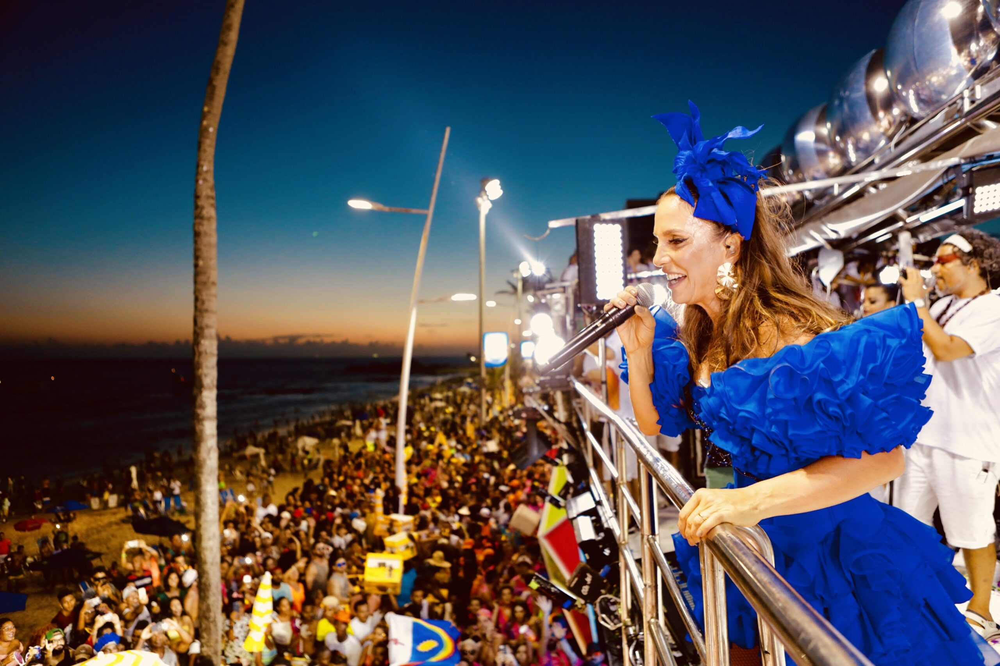

O Bloco Coruja já virou tradição, transformando o Carnaval de Salvador em uma festa linda e multicolorida. É uma das maiores atrações do Circuito Barra Ondina 2024 e desfilará no Sábado, domingo e segunda do Carnaval 2024. E em 2024, você vai dar MATCH com o Coruja! Sob o comando de Ivete Sangalo, o Bloco Coruja desfila no sábado, domingo e na segunda-feira de Carnaval, no circuito Barra-Ondina. Em Fevereiro, tem carnaval! E onde “Mainha” vai, tem folião sendo teleguiado pelo som do trio! Além de toda a sua animação que já é mundialmente conhecida, Ivete Sangalo sempre recebe no trio elétrico, artistas, atores, personalidades e convidados especiais que cantam junto os maiores sucessos de sua carreira. E são muitos viu? Venha viver essa experiência incrível! Traga todo mundo! “Chama o povo de casa, as amiga mais louca, chama a rapaziada”.
História do Bloco
Uma das principais atrações do Carnaval de Salvador, o Bloco Coruja foi fundado em 1963 como Clube dos Corujas e surgiu após um grupo de jovens desistir do bloco "Os Internacionais". Eles se reuniram na Igreja do Boqueirão, no bairro do Santo Antônio, e decidiram criar um novo bloco. Anos mais tarde, a atração teve o nome foi abreviado virando Os Corujas, e depois Corujas até finalmente ser Bloco Coruja, como conhecemos hoje. O nome do bloco vem do ato de "corujar as moças" por parte de seus integrantes, que começaram saindo de fantasia, mas depois passaram para as famosas mortalhas e posteriormente os abadás, que é conhecido como um dos principais símbolos da folia baiana. Além do público exclusivamente masculino, até 1996 a participação de mulheres no trio elétrico do Bloco Coruja era vetada. Neste mesmo ano, o cantor Ricardo Chaves, um dos grandes ícones da música baiana, passou a ser a atração principal, permanecendo até 2001. Foi só em 2002 que o bloco teve uma participação feminina, quando a cantora Ivete Sangalo assumiu o comando da atração e promoveu uma reformulação, tornando-o um dos principais blocos do Carnaval de Salvador, bem como um dos mais queridos entre os foliões, ganhando por anos seguidos o título de melhor bloco do carnaval de Salvador.